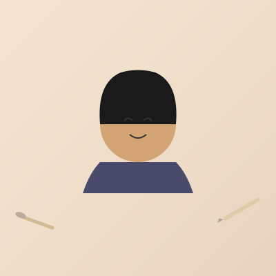

I'm an illustrator and designer who also makes videogames and interactive experiences. My work spans across various mediums including digital illustration, watercolor painting, and pencil drawing.
I'm drawn to storytelling through visuals, whether that means reimagining classic literature like George Orwell's 1984, bringing mythological figures like Nuwa to life, or creating whimsical characters like Chillzilla and Venus Fly Cat.
My creative process often blends traditional techniques with digital tools, allowing me to explore different styles and push the boundaries of each medium. I believe in the power of art to connect, inspire, and tell stories that resonate with people.
When I'm not illustrating, you can find me working on interactive projects and videogames, exploring new ways to merge art with technology.